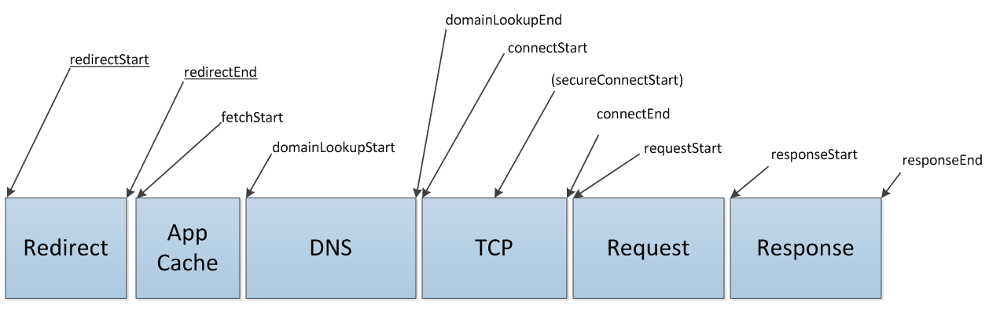

Copyright © 2010 W3C® (MIT, ERCIM, Keio), All Rights Reserved. W3C liability, trademark and document use rules apply.
This specification defines an interface for web applications to access timing information related to HTML elements.
This section describes the status of this document at the time of its publication. Other documents may supersede this document. A list of current W3C publications and the latest revision of this technical report can be found in the W3C technical reports index at http://www.w3.org/TR/.
This is a work in progress and may change without any notices.
Please send comments to public-web-perf@w3.org (archived) with [ResourceTiming] at the start of the subject line.
This document is produced by the Web Performance Working Group. The Web Performance Working Group is part of the Rich Web Clients Activity in the W3C Interaction Domain.
Publication as a Working Draft does not imply endorsement by the W3C Membership. This is a draft document and may be updated, replaced or obsoleted by other documents at any time. It is inappropriate to cite this document as other than work in progress.
This document was produced by a group operating under the 5 February 2004 W3C Patent Policy. W3C maintains a public list of any patent disclosures made in connection with the deliverables of the group; that page also includes instructions for disclosing a patent. An individual who has actual knowledge of a patent which the individual believes contains Essential Claim(s) must disclose the information in accordance with section 6 of the W3C Patent Policy.
This section is non-normative.
User latency is an important quality benchmark for Web Applications. While JavaScript-based mechanisms can provide comprehensive instrumentation for user latency measurements within an application, in many cases, they are unable to provide a complete end-to-end latency picture. While NavigationTiming address part of the problem by providing timing information associated with a navigation, this document introduces the ResourceTiming interface to allow Javascript mechanisms to collect complete timing information related to resources on a document.
For example, the following Javascript shows a simple attempt to measure the time it takes to fetch a resource:
<!doctype html>
<html>
<head>
</head>
<body onload="loadResources()">
<script>
function loadResources()
{
var start = new Date().getTime();
var image1 = new Image();
image1.src = 'http://w3c-test.org/webperf/image1.png';
image1.onload = resourceTiming;
var resourceTiming = function() {
var now = new Date().getTime();
var latency = now - start;
alert("End to end resource fetch: " + latency);
};
}
</script>
<img src="http://w3c-test.org/webperf/image0.png">
</body>
</html>
Though this script can measure the time it takes to fetch a resource, it cannot break down the time spent in various phases. Further, the script cannot easily measure the time it takes to fetch resources described in markup.
To address the need for complete information on user experience, this document introduces the PerformanceResourceTiming interface. This interface allows JavaScript mechanisms to provide complete client-side latency measurements within applications. With this interface, the previous example can be modified to measure a user's perceived load time of a resource.
The following script calculates the amount of time it takes to fetch every resource in the page, even those defined in markup. This example assumes that this page is hosted on http://w3c-test.org. One could further measure the amount of time it takes in every phase of fetching a resource with the PerformanceResourceTiming interface.
<!doctype html>
<html>
<head>
</head>
<body onload="loadResources()">
<script>
function loadResources()
{
var image1 = new Image();
image1.src = 'http://w3c-test.org/webperf/image1.png';
image1.onload = resourceTiming;
}
function resourceTiming()
{
var resourceList = window.performance.getResourceTimings();
for (i = 0; i < resourceList.length; i++)
{
if (resourceList[i].type == window.performance.INITIATOR_IMAGE)
{
alert("End to end resource fetch: "+ resourceList[i].responseEnd - resourceList[i].resourceFetchStart);
}
}
}
</script>
<img id="image0" src="http://w3c-test.org/webperf/image0.png">
</body>
</html>
All diagrams, examples, and notes in this specification are non-normative, as are all sections explicitly marked non-normative. Everything else in this specification is normative.
The key words "MUST", "MUST NOT", "REQUIRED", "SHOULD", "SHOULD NOT", "RECOMMENDED", "MAY", and "OPTIONAL" in the normative parts of this document are to be interpreted as described in RFC2119. For readability, these words do not appear in all uppercase letters in this specification. [RFC2119]
Requirements phrased in the imperative as part of algorithms (such as "strip any leading space characters" or "return false and abort these steps") are to be interpreted with the meaning of the key word ("must", "should", "may", etc) used in introducing the algorithm.
Some conformance requirements are phrased as requirements on attributes, methods or objects. Such requirements are to be interpreted as requirements on user agents.
Conformance requirements phrased as algorithms or specific steps may be implemented in any manner, so long as the end result is equivalent. (In particular, the algorithms defined in this specification are intended to be easy to follow, and not intended to be performant.)
The construction "a Foo object", where Foo is actually an interface, is sometimes used instead of
the more accurate "an object implementing the interface Foo".
The term DOM is used to refer to the API set made available to scripts in
Web applications, and does not necessarily imply the existence of an actual
Document object or of any other Node objects as
defined in the DOM Core specifications. [DOM3CORE]
A DOM attribute is said to be getting when its value is being retrieved (such as by author script), and is said to be setting when a new value is assigned to it.
The term "JavaScript" is used to refer to ECMA262, rather than the official term ECMAScript, since the term JavaScript is more widely known. [ECMA262]
Throughout this work, time is measured in milliseconds since midnight of January 1, 1970 (UTC).
This section is non-normative.
The PerformanceResourceTiming interface facilitates timing measurement of downloadable resources on the root page. It represents the timing information related to resources that initiate network downloads. For example, this interface is available for XMLHttpRequest and HTML elements such as iframe, img, script, object, audio, video, embed, svg, and link with the link type of stylesheet.
The term "resource" is also used to refer to these elements in this work.
PerformanceResourceTiming InterfaceThe PerformanceResourceTiming interface must include all downloadable resources initiated by the current browsing context. A downloadable resource is any resource that the user agent asks the networking layer to retrieve. Downloadable resources that are retrieved from the user agent's cache must be included in the PerformanceResourceTiming interface.
Examples:
src attribute of two IMG elements,
the fetch of the resource initiated by the first IMG element should be included in the
PerformanceResourceTiming interface. The user agent might not re-request the
URL from the networking layer for the second IMG element, instead using an in-memory browser cache.
In this case, there is only a single request sent to the networking layer for retrieval, so the fetch of the resource by the first
IMG element would be the only occurrence in the PerformanceResourceTiming
interface.
src attribute of an IMG element is changed via script, both the fetch of the original resource as well
as the fetch of the new URL would be included in the PerformanceResourceTiming interface.
XmlHttpRequest is generated twice for the same canonical URL, both fetches of the resource would be
included in the PerformanceResourceTiming interface. This is because the user agent must validate
both requests from the networking layer, even if the resource is in a disk cache from the first request.
IFRAME element is included on the page, then only the resource requested by IFRAME src attribute is included
in the PerformanceResourceTiming interface. Sub-resources requested by the IFRAME document
will be included in the IFRAME document's PerformanceResourceTiming interface and not the parent
document's PerformanceResourceTiming interface.
The user agent may choose to limit how many resources are included in the
PerformanceResourceTiming
interface. The recommended maximum number of resources is 150, though this may be changed by the user agent.
setResourceTimingBufferSize
can be called to request a change to this limit.
PerformanceResourceTiming Interfaceinterface PerformanceResourceTiming { const unsigned short INITIATOR_OTHER = 0; const unsigned short INITIATOR_LINK = 1; const unsigned short INITIATOR_CSS = 2; const unsigned short INITIATOR_SCRIPT = 3; const unsigned short INITIATOR_IMAGE = 4; const unsigned short INITIATOR_OBJECT = 5; const unsigned short INITIATOR_FRAME = 6; const unsigned short INITIATOR_SUBDOCUMENT = 7; const unsigned short INITIATOR_XMLHTTPREQUEST = 8; const unsigned short INITIATOR_EMBED = 9; const unsigned short INITIATOR_AUDIO = 10; const unsigned short INITIATOR_VIDEO = 11; const unsigned short INITIATOR_SVG = 12; const unsigned short INITIATOR_RESERVED = 255; readonly attribute unsigned short type; readonly attribute DOMString url; readonly attribute unsigned long long resourceFetchStart; readonly attribute unsigned long long redirectStart; readonly attribute unsigned long long redirectEnd; readonly attribute unsigned long long fetchStart; readonly attribute unsigned long long domainLookupStart; readonly attribute unsigned long long domainLookupEnd; readonly attribute unsigned long long connectStart; readonly attribute unsigned long long connectEnd; readonly attribute unsigned long long secureConnectionStart; readonly attribute unsigned long long requestStart; readonly attribute unsigned long long responseStart; readonly attribute unsigned long long responseEnd; };
type attributeThis attribute must return the type of object that initiated the request for the resource:
url attributeThis attribute must return the requested URL of the resource. The attribute must not change even if the fetch redirected to a different URL.
resourceFetchStart attributeIf there are HTTP redirects or equivalent when fetching the resource and if all the redirects or equivalent are from the same origin as the current document, this attribute must return the same value as redirectStart. Otherwise, this attribute must return the same value as fetchStart.
redirectStart attributeIf there are HTTP redirects or equivalent when fetching the resource and if all the redirects or equivalent are from the same origin as the current document, this attribute must return the starting time of the fetch that initiates the redirect.
If there are HTTP redirects or equivalent when fetching the resource and if any of the redirects are not from the same origin as the current document, and the Timing-Allow-Origin HTTP response header rules are met, this attribute must return the starting time of the fetch that initiates the redirect. Otherwise, this attribute must return zero.
redirectEnd attributeIf there are HTTP redirects or equivalent when fetching the resource and if all the redirects or equivalent are from the same origin as the current document, this attribute must return the time immediately after receiving the last byte of the response of the last redirect.
If there are HTTP redirects or equivalent when fetching the resource and if any of the redirects are not from the same origin as the current document, and the Timing-Allow-Origin HTTP response header rules are met, this attribute must return the time immediately after receiving the last byte of the response of the last redirect. Otherwise, this attribute must return zero.
fetchStart attributeThis attribute must return the time immediately before the user agent starts to fetch the resource. This time should not be overwritten if the user agent retries fetching the same resource due to failures.
domainLookupStart attributeThis attribute must return the time immediately before the user agent starts the domain name lookup for the resource. If a persistent connection [RFC 2616] is used or the resource is retrieved from relevant application caches or local resources, this attribute must return the same value as fetchStart.
If the last non-redirected fetch of the resource is not the same origin as the current document, domainLookupStart must return zero unless the Timing-Allow-Origin HTTP response header rules apply.
domainLookupEnd attributeThis attribute must return the time immediately after the user agent finishes the domain name lookup for the resource. If a persistent connection [RFC 2616] is used or the resource is retrieved from relevant application caches or local resources, this attribute must return the same value as fetchStart.
If the user agent has the domain information in cache, domainLookupStart and domainLookupEnd represent the times when the user agent starts and ends the domain data retrieval from the cache.
If the last non-redirected fetch of the resource is not the same origin as the current document, domainLookupEnd must return zero unless the Timing-Allow-Origin HTTP response header rules apply.
connectStart attributeThis attribute must return the time immediately before the user agent start establishing the connection to the server to retrieve the resource. If a persistent connection [RFC 2616] is used or the resource is retrieved from relevant application caches or local resources, this attribute must return value of domainLookupEnd.
If the last non-redirected fetch of the resource is not the same origin as the current document, connectStart must return zero unless the Timing-Allow-Origin HTTP response header rules apply.
connectEnd attribute This attribute must return the time immediately after the user agent finishes establishing the connection to the server to retrieve the resource. If a persistent connection [RFC 2616] is used or the resource is retrieved from relevant application caches or local resources, this attribute must return the value of domainLookupEnd.
If the transport connection fails and the user agent reopens a connection, connectStart and connectEnd should return the corresponding values of the new connection.
connectEnd must include the time interval to establish the transport connection. It must not include other time interval such as SSL handshake and SOCKS authentication.
If the last non-redirected fetch of the resource is not the same origin as the current document, connectEnd must return zero unless the Timing-Allow-Origin HTTP response header rules apply.
secureConnectionStart attribute This attribute is optional. User agents that don't have this attribute available must set it as undefined. When this attribute is available, if the scheme of the current page is HTTPS, this attribute must return the time immediately before the user agent starts the handshake process to secure the current connection. If the secureConnectionStart attribute is available but HTTPS is not used, this attribute must return zero.
If the last non-redirected fetch of the resource is not the same origin as the current document, secureConnectionStart must return zero unless the Timing-Allow-Origin HTTP response header rules apply.
requestStart attributeThis attribute must return the time immediately before the user agent starts requesting the resource. It is set prior to checking HTTP cache.
If the transport connection fails after a request is sent and the user agent reopens a connection and resend the request, requestStart must return the corresponding values of the new request.
If the last non-redirected fetch of the resource is not the same origin as the current document, requestStart must return zero unless the Timing-Allow-Origin HTTP response header rules apply.
responseStart attribute This attribute must return the time immediately after the user agent receives the first byte of the response from the server, or from relevant application caches or from local resources.
If the last non-redirected fetch of the resource is not the same origin as the current document, responseStart must return zero unless the Timing-Allow-Origin HTTP response header rules apply.
responseEnd attribute This attribute must return the time immediately after the user agent finishes receiving the last byte of the resource from from relevant application caches or from local resources.
[Supplemental] Performance {
void clearResourceTimings();
PerformanceResourceTimingList getResourceTimings();
PerformanceResourceTimingList getResourceTimingsByLocation( in Location location );
void setResourceTimingBufferSize (in unsigned long maxSize);
attribute Function onbufferfull;
};
interface PerformanceResourceTimingList{
readonly attribute unsigned long length;
getter ResourcePerformanceTiming(in unsigned long index);
};
clearResourceTimings methodThe method clearResourceTimings clears the buffer used to store the current
list of PerformanceResourceTiming resources.
Only the first 150 PerformanceResourceTiming
resources will be stored, unless otherwise specified by the user agent or setResourceTimingBufferSize.
No parameters
No return value
No exceptions
getResourceTimings methodThe getResourceTimings interface retrieves an array of PerformanceResourceTiming resources. When supplied with an type, this will return a filtered list.
Parameters
[optional] intype type of unsigned short
The type parameter specifies which types to retrieve. If no type is supplied all resource timings are returned.
Return Value
PerformanceResourceTimingList
A list of PerformanceResourceTiming resources.
No exceptions
getResourceTimingsByLocation methodThe getResourceTimingsByLocation interface retrieves an array of PerformanceResourceTiming resources as identified by the location.
Parameters
in location type of DOMLocatorThe id parameter specifies which resource timings to retrieve.
Return Value
PerformanceResourceTimingList
A list of PerformanceResourceTiming resources.
No exceptions
setResourceTimingBufferSize methodThe method setResourceTimingBufferSize updates the maximum number of PerformanceResourceTiming resources that will be stored in the buffer.
If this method is not called, the default maximum number of PerformanceResourceTiming resources stored is 150, unless otherwise specified by the user agent.
Parameters
inmaxSize type of unsigned long
The maxSize parameter sets the maximum number of PerformanceResourceTiming resources that will be stored in the buffer.
No return value
No exceptions
onbufferfull attributeThe callback onbufferfull is triggered when the buffer used to store the list of PerformanceResourceTiming is full. The callback can be used to package existing PerformanceResourceTiming resources and clear the buffered PerformanceResourceTiming list. While executing the onbufferfull callback, PerformanceResourceTiming will continue to be collected beyond the maximum limit of the resources allowed in the PerformanceResourceTiming interface until one of the following occurs:
clearResourceTimings is called - The PerformanceResourceTimingList will begin with the
n+1th item if it exists and the first n elements are released, where n is the maximum number of resources allowed in the PerformanceResourceTiming
interface. If the n+1th item does not exist, the buffer is cleared. The max length of the PerformanceResourceTimingList
does not change unless otherwise specified by setResourceTimingBufferSize.
setResourceTimingBufferSize is called - The PerformanceResourceTimingList will extend and / or truncate to the buffer size specified.clearResourceTimings or
setResourceTimingBufferSize is called during the execution of the onbufferfull callback
- no updates are made to the PerformanceResourceTimingList.Information from cross-origin resources must be included in the PerformanceResourceTiming interface. In the absence of the Timing-Allow-Origin HTTP response header, these attributes must be set to zero: redirectStart, redirectEnd, domainLookupStart, domainLookupEnd, connectStart, connectEnd, requestStart, responseStart, and responseEnd.
The terms origin and same origin are defined by The HTTP Origin Header. [ORIGIN]
The term cross-origin is used to mean non same origin.
Server-side applications may return the Timing-Allow-Origin HTTP response header to allow the User Agent to fully expose, to the document origin(s) specified, the values of attributes that would have been zero due to the cross-origin restrictions previously specified in this section.
Timing-Allow-Origin Response HeaderThe Timing-Allow-Origin header indicates whether a resource's timing can be
shared based by returning the value of the Origin request header in the
response. ABNF:
Timing-Allow-Origin = "Timing-Allow-Origin" ":" origin-list-or-null | "*"
origin-list-or-null is defined by The HTTP Origin Header.
[ORIGIN]
Illustration
This section is non-normative.
The following graph illustrates the timing attributes defined by the PerformanceResourceTiming interface. Attributes underlined may not be available when fetching resources from different origins. User agents may perform internal processing in between timings, which allow for non-normative intervals between timings.

For each resource initiated on the page:
Return to step 9 if the user agent fails to send the request or receive the entire response, and needs to reopen the connection.
When persistent connection [RFC 2616] is enabled, a user agent may first try to re-use an open connect to send the request while the connection can be asynchronously closed. In such case, connectStart, connectEnd and requestStart should represent timing information collected over the re-open connection.
The value of the timing attributes must monotonically increase to ensure timing attributes are not skewed by adjustments to the system clock during the navigation. The difference between any two chronologically recorded timing attributes must never be negative. The user agent must record the system clock at the beginning of the navigation and define subsequent timing attributes in terms of a monotonic clock measuring time elapsed from the beginning of the navigation.
This section is non-normative.
When giving various timing information of how a resource is requested and process, the ResourceTiming interface potentially exposes such information to any page that has this resource included. To limit the access to the ResourceTiming interface, the same origin policy is enforced by default. Additionally, resource providers can explicitely allow timing information to be collected over a resource by adding the allow-timing meta tag to the HTML header, which specifies the domains that are allowed to access the timing information.
This section is non-normative.
Similar to the discussion in the Privacy section.
We would like to sincerely thank Annie Sullivan, Darin Fisher, James Simonsen, Jason Weber, Jonas Sicking, Karen Anderson, Kyle Scholz, Nic Jansma, Steve Souders and Tony Gentilcore to acknowledge their contributions to this work.